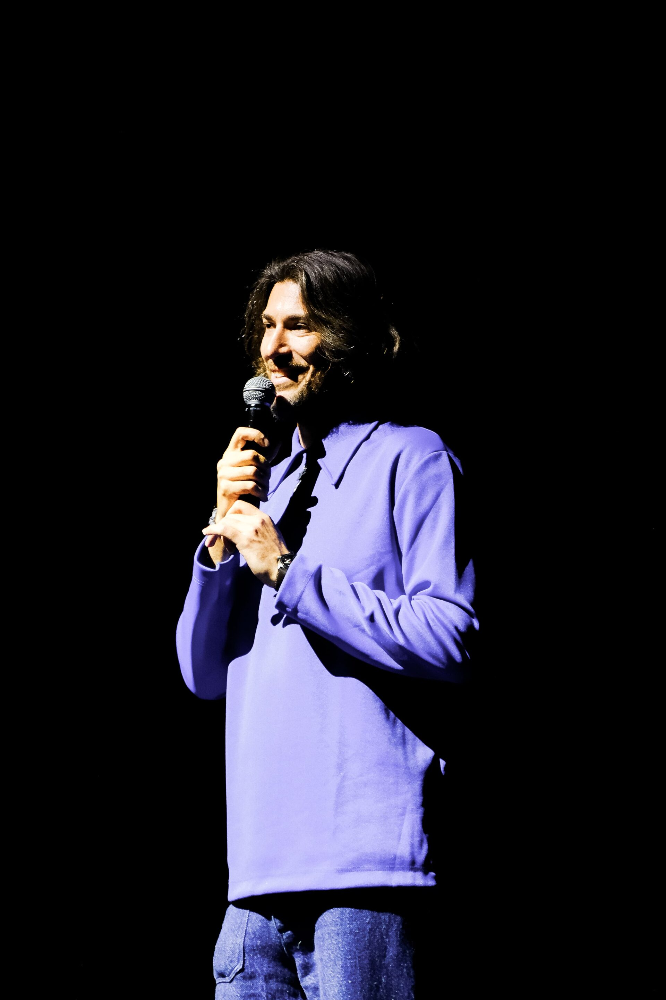

Я из Петербурга, живу на Кипре. Двадцать лет я занимаюсь бизнесом в творческой среде — и всё это время собираю из ничего живые штуки, которые потом работают без меня.
В Петербурге основал Part Academy — крупнейшую в стране академию исполнительских искусств — и театральную площадку «Скороход». После переезда собрал с нуля за четыре месяца Cyprus International Theatre Festival, который за три сезона стал главным театральным событием острова. На свои сцены привозил Малковича, Серебренникова, Чулпан Хаматову, Петрушевскую. В октябре — Фанни Ардан с «Cassandre».
Вообще я очень люблю талантливых людей — наверное, поэтому меня всегда так тянуло в искусство: концентрация ярких людей там бывает поразительная. И я люблю их расспрашивать, разбирать, как они устроены. Один из таких разговоров — мой опенток с Джоном Малковичем.
По образованию я инженер-экономист — это объясняет, почему меня одинаково заводит и таблица, и драматургия. Я Fulbright Fellow: преподавал в США в University of Wisconsin–Milwaukee и читал гостевые лекции в Berkeley, University of Hawaiʻi at Mānoa и University of Central Florida. Говорю свободно на трёх языках и всю жизнь живу между странами, поэтому, кажется, неплохо перевожу людей друг другу.
Я постоянно строю своё — я практик, не теоретик с трибуны. И больше всего мне нравится помогать другим выходить из кризиса: это то, в чём я силён и от чего получаю удовольствие.
Сейчас так консультирую несколько организаций — очень разные сферы, команды от десяти до ста человек. И общее у них одно: кризис у всех на одно лицо. Паника, туман, и все тушат не там, где горит.
В этом тумане я вижу корень — не симптом вроде «у нас не работает реклама», а то, что под ним. Чаще всего человеку в кризисе нужно сначала разобраться с целеполаганием: куда он на самом деле идёт и на чём держится бизнес. Дальше — фокус (что пора перестать делать) и автоматизация там, где она действительно нужна. Ниша значения не имеет — кризис устроен похоже везде.
Слово «консультант» мне самому не очень нравится — мне ближе делать вместе, а не советовать со стороны (Джобс, кажется, был того же мнения). Сам менторюсь у Александра Ларьяновского по бизнесу и у Андрея Ожигина по AI, а сам менторю предпринимателей по кризис-менеджменту — дорога в обе стороны.
Для собственников и команд, у которых клиенты уходят, бюджет горит, а фокуса нет. За несколько сессий — диагноз, фокус, план. Где надо — собираем AI-контур.
Записаться на 30-мин разговорweinsteinsasha@gmail.com — личное
office@citf.cy — CITF